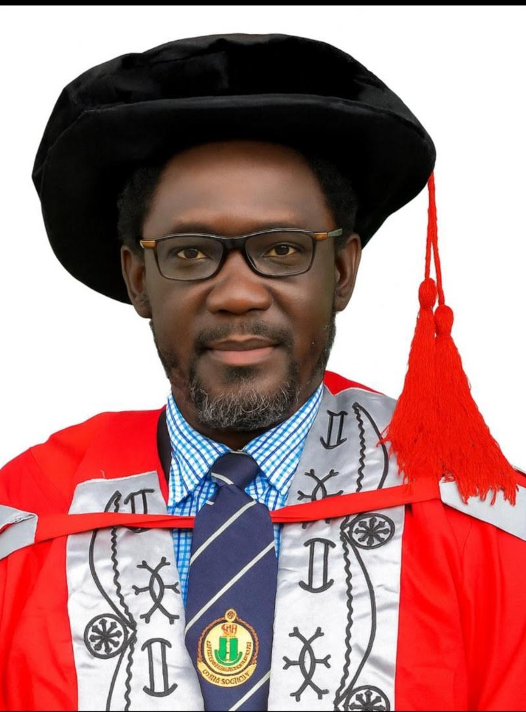
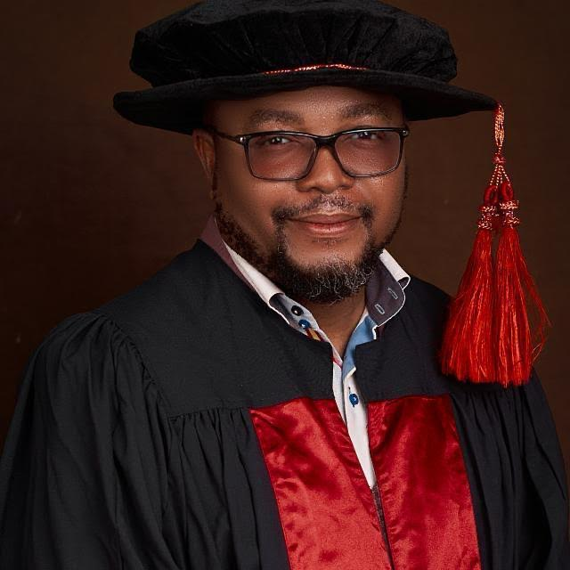

Governance & Leadership
Founder & Executive Director

Dr. Yohanna Musa Usman
MBBS • M.Sc. • Ph.D. • FMCA — Founder & Executive Director
Dr. Yohanna Musa Usman is a physician-scientist, consultant anaesthetist, and genomics researcher with a distinguished career spanning clinical medicine, biomedical research, and precision healthcare. He earned his Bachelor of Medicine, Bachelor of Surgery (MBBS) from the University of Maiduguri before pursuing postgraduate studies in Human Anatomy at the University of Jos, where he obtained both a Master of Science (M.Sc.) and a Doctor of Philosophy (Ph.D.) with specialization in Human Genomics.
He also completed specialist residency training in Anaesthesia, Critical Care, and Pain Management at Jos University Teaching Hospital and was awarded the Fellowship of the Medical College of Anaesthetists (FMCA).
Drawing on this multidisciplinary background, Dr. Usman’s work integrates clinical practice with research in human genomics, molecular genetics, pharmacogenomics, bioinformatics, molecular diagnostics, and precision medicine.
Scientific Advisory Committee Chairman

Prof. Nanyak Zingfa Galam
MBBS • M.Sc. • Ph.D. — Chairman, Scientific Advisory Committee
Professor Nanyak Zingfa Galam is a distinguished physician-scientist and academic leader with over 18 years of experience in academia and biomedical research. He currently serves as a Professor of Physiology and the Provost of the College of Health Sciences at the Federal University Wukari, Taraba State, Nigeria.
Prof. Galam earned his MBBS and Master of Science in Human Physiology from the University of Jos, and further advanced his expertise by obtaining a PhD in Biomedical Engineering from Near East University, Cyprus. He previously held critical leadership positions including Head of the Department of Human Physiology and Acting Deputy Dean of the Faculty of Basic Medical Sciences at the University of Jos.
As a prolific researcher with over 30 peer-reviewed publications exploring cell physiology, cancer biology, and biomaterials, his targeted research interests align perfectly with the scientific vision of the Centre:
- Nanotechnology-enhanced genomics for precision cancer medicine
- Molecular characterization of genetic channels and neuropathies
- The therapeutic potential of stem cells in infectious diseases
- Cellular cross-talk and the physiological impacts of lifestyle and environmental factors
In his capacity as Chairman of the Scientific Advisory Committee, Prof. Galam guides the strategic scientific direction of the Initiative, leveraging his multidisciplinary background to foster research that bridges basic cellular physiology with advanced genomic applications tailored for African populations.
Board of Trustees

To Be Announced
Chairman, Board of Trustees
The Board of Trustees acts as the primary legal and financial governance body of the organization. They are responsible for fiduciary oversight, institutional policy validation, regulatory compliance across structural programs, and safeguarding the long-term sustainability of the Centre’s flagship initiatives.